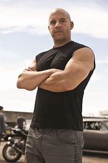

Biografia Dom Toretto

Dominic Toretto é um personagem fictício da franquia de filmes "Velozes e Furiosos".
Sua biografia fictícia é a seguinte:
Origem: Dominic Toretto é retratado como um nativo de Los Angeles, Califórnia.
Ele é um piloto de corridas de rua habilidoso e é apaixonado por carros desde jovem.
Conquistas:
Líder da Família Toretto: Dominic é conhecido por sua forte lealdade à sua "família", que inclui sua irmã Mia e seus amigos próximos.
Ele assume o papel de líder e protetor daqueles que considera sua família, muitas vezes se envolvendo em atividades ilegais para protegê-los.
Habilidades de Corrida: Dominic é renomado por suas habilidades de pilotagem e corrida, sendo um dos melhores pilotos de carros de rua do mundo.
Ele é conhecido por participar de corridas clandestinas e desafios de alta velocidade.
Combate ao Crime: Ao longo da série de filmes, Dominic e sua equipe se envolvem em várias missões de combate ao crime, enfrentando inimigos, incluindo organizações criminosas internacionais.
Dominic Toretto é interpretado por Vin Diesel e é o personagem central da franquia "Velozes e Furiosos". Sua história é marcada por uma combinação de corridas emocionantes, ação de alta octanagem e uma ênfase na importância da família e da lealdade.
Ler sobre mais personagens